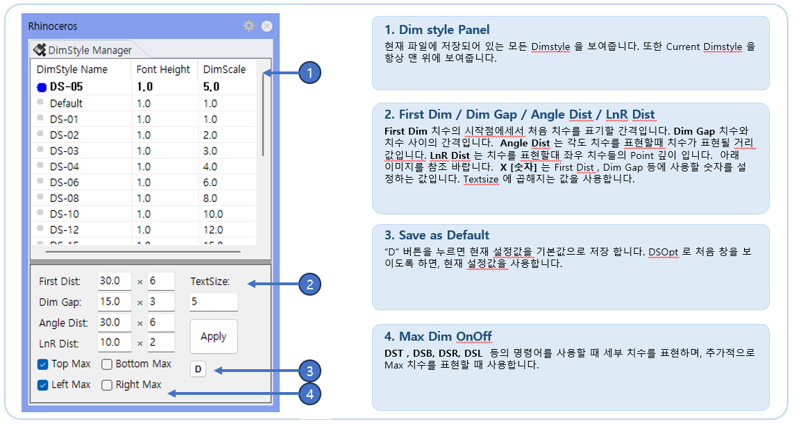

DsOpt
Dimension Style과 RCW 치수 옵션을 설정하는 패널을 여는 명령입니다. 현재 Rhino DimStyle 선택과 DST, DSR, DSB, DSL 치수 생성 간격을 관리합니다.
자동 치수 명령에서 사용할 첫 치수 거리, 치수 간격, 방향별 최대 치수 표시 여부를 미리 설정할 때 사용합니다. DST/DSR/DSL/DSB의 치수 배치 품질을 좌우하는 옵션 패널입니다.
DsOpt를 입력합니다.First Dist, Dim Gap, Angle Dist, LnR Dist, Max 옵션을 작업 조건에 맞게 조정합니다.DST, DSR, DSB, DSL 및 제작 가공도 치수 작성에 사용됩니다.
| 항목 | 설명 |
|---|---|
| DimStyle 선택 | 목록에서 더블클릭하여 현재 문서의 Dimension Style을 선택합니다. |
| First Dist | DST/DSR/DSB/DSL이 만드는 첫 번째 치수선의 거리입니다. |
| Dim Gap | Max 치수 등 추가 치수선과 첫 번째 치수선 사이의 간격입니다. |
| Angle Dist | Angle 치수 작성 시 사용하는 거리 옵션입니다. |
| LnR Dist | Left/Right 방향 치수 또는 관련 치수 배치에 사용하는 거리 옵션입니다. |
| Top/Left/Right/Bottom Max | 방향별 전체 Max Dimension을 추가로 만들지 결정합니다. |
| 명령 | 설명 |
|---|---|
DST, DSR, DSB, DSL | Dim_Points 기반 자동 Linear Dimension 작성 시 거리와 Max 옵션을 사용합니다. |
FDwg | Frame 제작 가공도 치수 작성에 사용됩니다. |
Gsfd | Glass 가공도 치수 작성에 사용됩니다. |
Bpfd | BackPanel 가공도 치수 작성에 사용됩니다. |
Font Height × DimensionScale과 연결됩니다. 치수 Text는 현재 DimStyle의 영향을 받습니다.First Dist, Dim Gap, 방향별 Max 옵션이 DST/DSR/DSL/DSB 자동 치수 생성 위치에 그대로 반영됩니다.DimStyle로도 이 패널을 열 수 있었으나, Rhino 자체 명령 DimStyle(문서 속성 > 주석 스타일)과 이름이 겹쳐 DsOpt 하나로 정리했습니다. 명령창에 DimStyle을 입력하면 이제 Rhino 기본 명령이 실행됩니다.